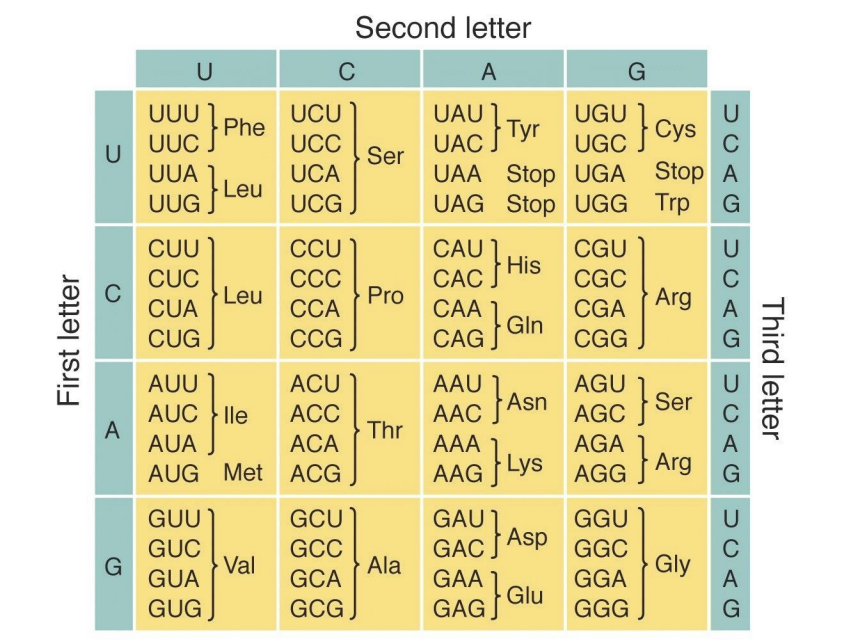

TDT4287 - Algoritmer for bioinformatikk
01 Introduction
Bioinformatics - the collection, classification, storage, and analysis of biochemical and biological information using computers especially as applied in molecular genetics and genomics.
This course will focus on sequence (string) analysis
- Alignment -> finding similar sequences
- Suffix trees -> index-based searching
- Motif finding -> similarities between sequences
- Assembly -> reconstructing sequences from fragments
- RNA structures -> similarities within a sequence
A cell as seen by a computer scientist
- DNA replicates itself
- is the transcription of DNA to RNA
- is the translation of RNA to Protein
List of biological sequence problems
- How do genes encode proteins?
- What is the function of a protein?
- How do we recognize genes in DNA?
- How are genes controlled so that proteins are produced at the correct place and time?
How do genes encode proteins?
Protein structure
- Sequence (string) of amino acids
- 20 different amino acids
- Amino acid sequence folds into unique, reproducible 3D (tertiary) structure
- The structure determines the function
The genetic code

The genetic code must use at least 3 nucleotides to encode all 20 amino acids, but will have some redundancy ().
What is the function of a protein?
Protein sequence determines function.
Genes evolved from common ancestor - homologs - often have similar functions. Thus, we can search for similar gene sequences to determine similar gene functions. We determine similar genes by finding common gene subsequences.
Longest common subsequence (LCS)
E.g. the LCS of AGCTAGCT and ATGCATGC is AGCAGC.
Recursive LCS
Three possibilities:
- Last letter from both strings part of LCS if identical; none of them otherwise
- Last letter from left string is part of LCS
- Last letter from right string is part of LCS
Thus we have
\begin{align*} \text{LCS}_{(x,y)} &= \max\{ \\ & \text{LCS}_{(x,y-1)}, \\ & \text{LCS}_{(x-1,y)}, \\ & \text{LCS}_{(x-1,y-1)} + (\text{LCS}[x] == \text{LCS}[y] \; ? \; 1 : 0) \\ & \} \end{align*}
Recursive LCS solves subproblems multiple times.
Dynamic programming (DP) LCS
Dynamic programming can be applied to recursive LCS such that subproblems are only solved once. We solve the matrix bottom-up. To record the actual subsequence, we also build a backtrack matrix.
// LCS(S, R)
a[0,0] = 0
for i in range(1, |S|):
a[i,0] = 0
for j in range(1, |R|):
a[0,j] = 0
for i in range(1, |S|):
for j in range(1, |R|):
a[i,j] = max{
a[i-1,j],
a[i,j-1],
a[i-1,j-1] + (s[i] == r[j] ? 1 : 0)
}
// The following creates the backtrack matrix
b[i,j] = {
0 if a[i,j] == a[i-1,j], // "up"
1 if a[i,j] == a[i,j-1], // "left"
2 if a[i,j] == a[i-1,j-1] + 1 // "up-left"
}
// PrintLCS(b, S, i, j):
if i == 0 or j == 0:
return
if b[i,j] == 2:
PrintLCS(b, S, i-1, j-1)
print s[i]
else if b[i,j] == 0:
PrintLCS(b, S, i-1, j)
else:
PrintLCS(b, S, i, j-1)
Homework
- Compute the LCS DP matrix for LCS(ATTCGGTTA, TAGTGATG).
- Find the LCS without using a backtrack matrix.
- LCS(AGCTTAGCTG, TCGGATG) has multiple solutions (for example, TTG or ATG). Find an algorithm that returns all the LCSs. (Hint: a stack could be useful)